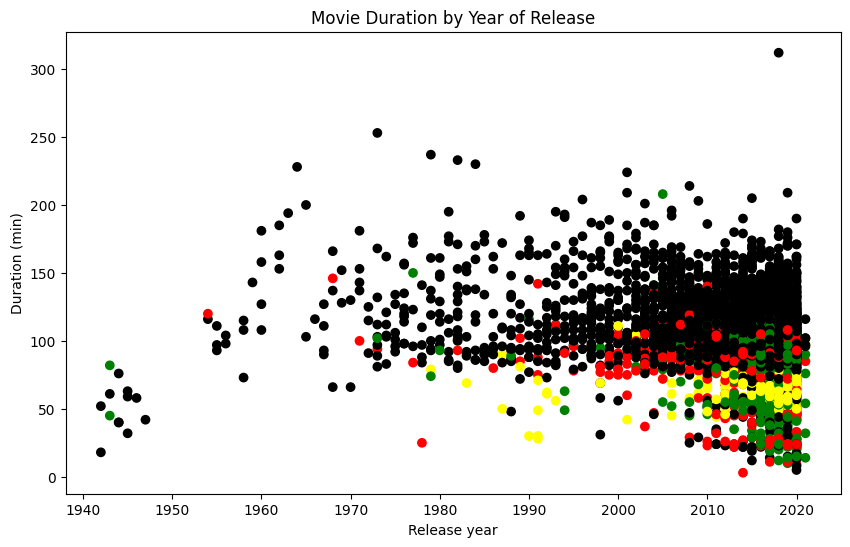

# Read in the Netflix CSV as a DataFrame
netflix_df = pd.read_csv("netflix_data.csv")
Netflix! What started in 1997 as a DVD rental service has since exploded into one of the largest entertainment and media companies.
Given the large number of movies and series available on the platform, It’s a perfect opportunity for me to flex my exploratory data analysis skills and dive into the entertainment industry. I’ve also been brushing up on my Python skills and have taken an initial look at a CSV file containing Netflix data. I believe that the average duration of movies has been declining. Using my initial research, I’ll delve into the Netflix data to determine whether movie lengths are actually getting shorter and explain some of the contributing factors, if any.
This dataset netflix_data.csv , has the following table detailing the column names and descriptions:
The data
netflix_data.csv
| Column | Description |
|---|---|
show_id |
The ID of the show |
type |
Type of show |
title |
Title of the show |
director |
Director of the show |
cast |
Cast of the show |
country |
Country of origin |
date_added |
Date added to Netflix |
release_year |
Year of Netflix release |
duration |
Duration of the show in minutes |
description |
Description of the show |
genre |
Show genre |
::: {#320a3abc-8a36-4b2b-baaf-473325363a4d .cell executionCancelledAt=‘null’ executionTime=‘10’ lastExecutedAt=‘1704181340975’ lastScheduledRunId=‘null’ lastSuccessfullyExecutedCode=’# Importing pandas and matplotlib import pandas as pd import matplotlib.pyplot as plt
Start coding!’ execution_count=2}
# Importing pandas and matplotlib
import pandas as pd
import matplotlib.pyplot as plt
# Start coding!:::
# filter data to remove tv shows
netflix_subset = netflix_df[netflix_df["type"] == "Movie"]# selecting only the column of interest about netflix movie data
netflix_movies = netflix_subset[["title", "country", "genre", "release_year", "duration"]]# filter for movie durations shorter than 60 minutes
short_movies = netflix_movies[netflix_movies.duration < 60]::: {#804368ce-da31-4a20-b3e9-69190fcc7cf2 .cell executionCancelledAt=‘null’ executionTime=‘483’ lastExecutedAt=‘1704181341662’ lastScheduledRunId=‘null’ lastSuccessfullyExecutedCode=’# define an empty list called colors colors = []
iterate through rows of netflix_movies
for label, row in netflix_movies.iterrows(): if row[“genre”] == “Children”: colors.append(“red”) elif row[“genre”] == “Documentaries”: colors.append(“green”) elif row[“genre”] == “Stand-Up”: colors.append(“yellow”) else: colors.append(“black”)
initialize fig and create a scatter plot
fig = plt.figure(figsize=(10,6)) plt.scatter(netflix_movies.release_year, netflix_movies.duration, c=colors)
add title and axis labels
plt.title(“Movie Duration by Year of Release”) plt.xlabel(“Release year”) plt.ylabel(“Duration (min)”)
show the plot
plt.show()’ execution_count=7}
# define an empty list called colors
colors = []
# iterate through rows of netflix_movies
for label, row in netflix_movies.iterrows():
if row["genre"] == "Children":
colors.append("red")
elif row["genre"] == "Documentaries":
colors.append("green")
elif row["genre"] == "Stand-Up":
colors.append("yellow")
else:
colors.append("black")
# initialize fig and create a scatter plot
fig = plt.figure(figsize=(10,6))
plt.scatter(netflix_movies.release_year, netflix_movies.duration, c=colors)
# add title and axis labels
plt.title("Movie Duration by Year of Release")
plt.xlabel("Release year")
plt.ylabel("Duration (min)")
# show the plot
plt.show()
:::
# Are we certain that movies are getting shorter?
answer = "maybe"